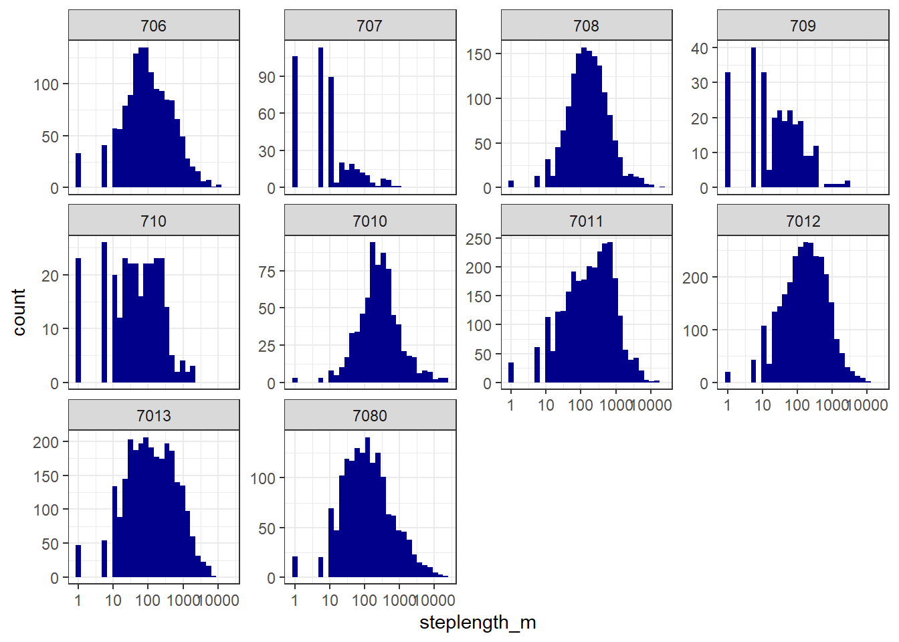

| Id_Number | DateRange | NumDays |
|---|---|---|
| 706 | Dec 2007 to May 2009 | 515 |
| 707 | Dec 2007 to Apr 2008 | 145 |
| 708 | Feb 2009 to Dec 2010 | 669 |
| 709 | Jan 2008 to Apr 2008 | 98 |
| 710 | Jan 2008 to Apr 2008 | 100 |
| 7010 | Feb 2009 to Jan 2010 | 345 |
| 7011 | Jan 2009 to Dec 2011 | 1055 |
| 7012 | Feb 2009 to Feb 2012 | 1106 |
| 7013 | Feb 2009 to Aug 2011 | 926 |
| 7080 | Dec 2007 to Aug 2009 | 607 |
Muskox Collar Data Cleaning
Sample Size
Movement data for this project come from 10 female muskoxen in the Sahtu region of the Northwest Territories (NWT) that were collared between December 2007 and February 2012.
We can plot the date ranges of individual collared muskoxen below:
Muskoxen 707, 709, 710, and 7010 have less than a year of movement data and only 7011, 7012, and 7013 have more than 2 years of data.
Collar Failure
Before we look into the data, there are some data cleaning steps we can use to remove errors from that dataset. First, we know that collars 707, 709, and 710 had their release mechanisms triggered early, so we need to look at the data to figure out when this happened. Let’s start by looking at histograms of step lengths:

The stepped nature of the distances traveled on the left side of the graph are a result of the resolution of the GPS device. For collars 707, 709, and 710, there appear to be a greater-than-expected number of instances where the muskoxen move negligible distances. By plotting time series of step lengths, we can can see that these negligible distances occur at the end of the recording periods:
For simplicity, let’s remove all points following the first two consecutive short step lengths (i.e. 0 or 4.4747041) at the end of the time series.
| Id_Number | DaysRemoved |
|---|---|
| 707 | 108 |
| 709 | 36 |
| 710 | 19 |
Data Filtering
Now that we have removed data that we know contain errors, we can start to look for less obvious sources of errors. The SDLfilter package has two functions, dupfilter and ddfilter, that remove data duplicates and unlikely points, respectively.
First let’s use dupfilter to remove duplicate data points with the same date and time.
sdl_dup <- SDLfilter::dupfilter(sdl_musk,
step.time = 7,
conditional = TRUE)
dupfilter_exact removed 3 of 14065 locations
dupfilter_qi removed 0 of 14062 locations
dupfilter_time removed 31 of 14062 locations
dupfilter_space removed 0 of 14031 locations
Input data: 14065 locations
Filtered data: 14031 locations
dupfilter removed 34 locations (0.24% of original data)Next we’ll use ddfilter to filter points based on speed and turning angles between consecutive points. To use this function, we need to estimate the maximum reasonable speed between two consecutive locations. The vmax function maps a gamma distribution to the observed speeds and estimates the maximum speed as the value with a cumulative probability of 0.999.
vmax <- SDLfilter::vmax(sdl_dup, prob = 0.999)
dupfilter_exact removed 0 of 14031 locations
dupfilter_qi removed 0 of 14031 locations
dupfilter_time removed 0 of 14031 locations
dupfilter_space removed 176 of 14031 locations
Input data: 14031 locations
Filtered data: 13855 locations
dupfilter removed 176 locations (1.25% of original data)
The maximum linear speed (Vmax) was estimated using 13841 locations.
Vmax: 0.4891431 km/hWe will also estimate the maximum one-way linear speed of a loop trip. A loop trip is defined as a spatial departure and return involving a series of three or more consecutive points. The vmaxlp function also uses a gamma distribution to estimate this speed:
vmaxlp <- SDLfilter::vmaxlp(sdl_dup, prob = 0.999)
dupfilter_exact removed 0 of 14031 locations
dupfilter_qi removed 0 of 14031 locations
dupfilter_time removed 0 of 14031 locations
dupfilter_space removed 176 of 14031 locations
Input data: 14031 locations
Filtered data: 13855 locations
dupfilter removed 176 locations (1.25% of original data)
The maximum one-way linear speed of a loop trip (vmaxlp) was estimated using
180 Vlp from 90 loop trips.
vmaxlp: 0.269 km/hNow we can filter our data using ddfilter. Locations are removed if one of following criteria are met: 1) speed from previous and to subsequent location both exceed vmax; 2) inner angle is less than a given threshold and speed from a previous or to a subsequent location exceeds vmaxlp. We will specify a turning angle of 14 degrees, as outlined in Bjørneraas et al. 2010.
sdl_dd1 <- SDLfilter::ddfilter(sdl_dup, qi = 5,
vmax = vmax, vmaxlp = vmaxlp,
ia = 14)
ddfilter_speed removed 39 of 14031 locations
ddfilter_loop removed 38 of 13992 locations
Input data: 14031 locations
Filtered data: 13954 locations
ddfilter removed 77 locations (0.55% of original data)
The filtered points appear non-randomly across the time series, which suggests that our speed thresholds were too small. Let’s increase vmax and vmaxlp to more conservative values of 2 km/h and 1 km/h, respectively.
sdl_dd2 <- SDLfilter::ddfilter(sdl_dup, qi = 5,
vmax = 2, vmaxlp = 1,
ia = 14)
ddfilter_speed removed 1 of 14031 locations
ddfilter_loop removed 1 of 14030 locations
Input data: 14031 locations
Filtered data: 14029 locations
ddfilter removed 2 locations (0.01% of original data)That seems to do a better job of only removing the most extreme points.
Post-deployment Bias
Lastly, we will remove any points collected within 24 hours of collar deployments to remove the immediate effects of capture and handling.
| Id_Number | collar_deployed |
|---|---|
| 708 | 2009-02-07 15:00:00 |
| 7010 | 2009-02-07 14:19:00 |
| 7013 | 2009-02-07 11:55:00 |
| 7012 | 2009-02-06 12:52:00 |
| 7011 | 2009-01-28 15:02:00 |
| 710 | 2008-01-18 16:29:00 |
| 709 | 2008-01-18 14:50:00 |
| 7080 | 2007-11-14 13:21:00 |
| 707 | 2007-11-14 10:50:00 |
| 706 | 2007-11-11 13:30:00 |